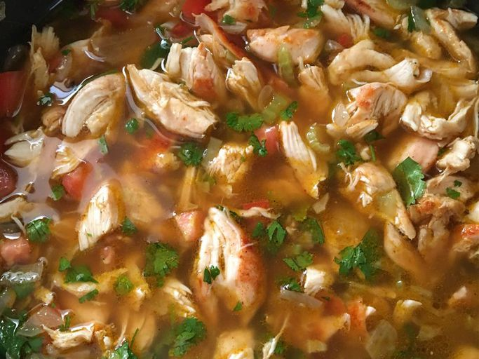

Crazy Chicken Soup

Freshly prepared chicken in its own juices.
Marinated in a southern spiced rub and herbs,
with fresh carrots, onions, and celery
Ingredients
- 2 lbs chicken thighs
- 3 tablespoons olive oil
- 3 teaspoons thyme
- 2 teaspoons rosemary
- 4 teaspoons blak magic
- 1 cup carrot
- 1 cup celery
- 2 cups yellow onion
- 4 qts chicken stock
Steps
Step 1
- Preheat the oven to 350 degrees F (175 degrees C).
Step 2
- Lay chicken breasts evenly onto a baking sheet. Sprinkle with 1 tablespoon taco seasoning mix.
Step 3
- Bake chicken in the preheated oven until no longer pink in the center and the juices run clear, 30 to 35 minutes. An instant-read thermometer inserted into the center should read at least 165 degrees F (74 degrees C). Allow to cool enough to handle, then shred or cut into strips.
Step 4
- While chicken is cooking, warm oil in a stockpot over medium-high heat. Cook and stir onions and celery in hot oil until onion has softened and turned translucent, about 5 minutes. Stir in chicken broth and water; bring to a boil. Add remaining 1 tablespoon taco seasoning mix, cumin, and black pepper. Reduce heat to medium and simmer until flavors blend, about 30 minutes.
Step 5
- Add chicken, tomatoes, and cilantro; simmer for 5 minutes. Serve soup hot topped with cheese, tortilla chips, and avocado.